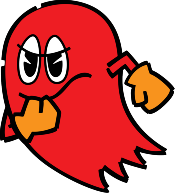

Blinky
Blinky (ブリンキー Burinkii), also known as Akabei, is the leader of the Ghosts and the arch-enemy of Pac-Man. He is also portrayed as the most aggressive ghost who always chases Pac-Man, and is hard to shake once he starts. He is known to have a short temper, and is good friends with Pinky, Inky, and Clyde. He also has a daughter named Yum-Yum.
While originally the main antagonist in the first Pac-Man arcade game, his role has largely been diminished to secondary antagonist or an ally in recent incarnations, though he is still considered the series de-facto main antagonist in remakes of the first game and by older fans.
Characteristics
Appearance
Blinky is a red-colored ghost. He has big eyes, and often has an angry expression. He is typically limbless within games, but some incarnations show him with arms, sometimes with orange gloves as well.
In the TV series and Pac-Land, Blinky wears a wide-brimmed hat, and has a somewhat cowardly and afraid expression rather than being angry. In Pac-Man Party and Ghostly Adventures, he has a protrusion to the top of his head (which he calls his "hairdo") and blue eyes; his arms are also stubbier.
Personality
Blinky is the most determined of the ghosts, and the leader of the Ghost Gang. He is often depicted as the most intelligent and most conceited of the quartet. He is also the most aggressive ghost in all "maze-oriented" Pac-Man games, relentlessly chasing Pac-Man/Ms. Pac-Man. Though Pac-Man (under most circumstances) is an enemy of all of the ghosts, Blinky is his main nemesis among them; however, some games depict this as a form of friendly antagonism.
In Pac-Man and the Ghostly Adventures, Blinky is still the de-facto leader of the Ghost Gang, but is now an ally and friend of Pac-Man rather than a pseudo-antagonist. Despite this, there have been occasions where he has enjoyed frightening and picking on Pac-Man, and has also shown to enjoy upsetting Pac-People the most out of the four ghosts, showing that even as an ally, he still possesses mischievous tendencies. He can sometimes be arrogant and snarky. He is also a Pac-Fu master who genuinely believes in the code of Pac-Fu thus he never once mentioned his skills or showed them until The Pac Be With You.